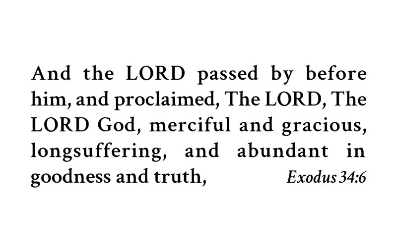
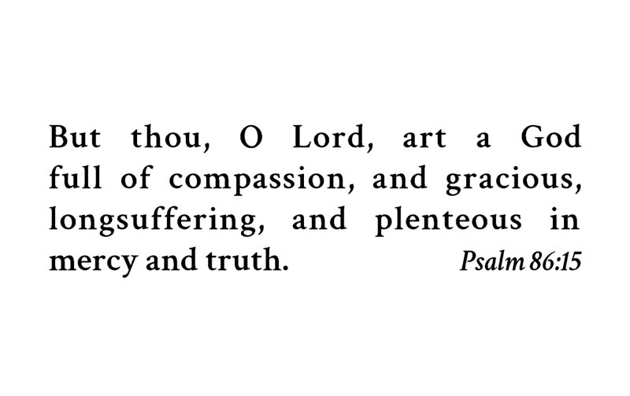

Card 1


Front
And the LORD passed by before him, and proclaimed, The LORD, The LORD God, merciful and gracious, longsuffering, and abundant in goodness and truth,
Exodus 34:6Back
But thou, O Lord, art a God full of compassion, and gracious, longsuffering, and plenteous in mercy and truth.
Psalm 86:15